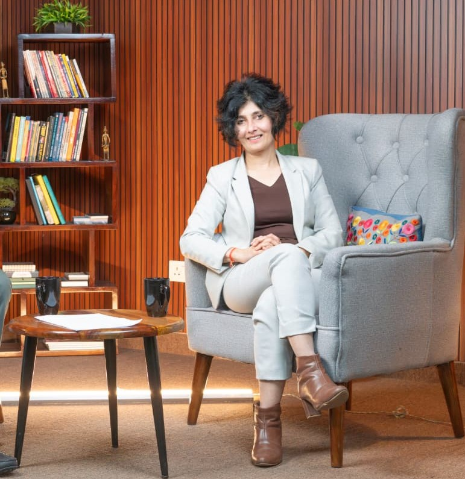
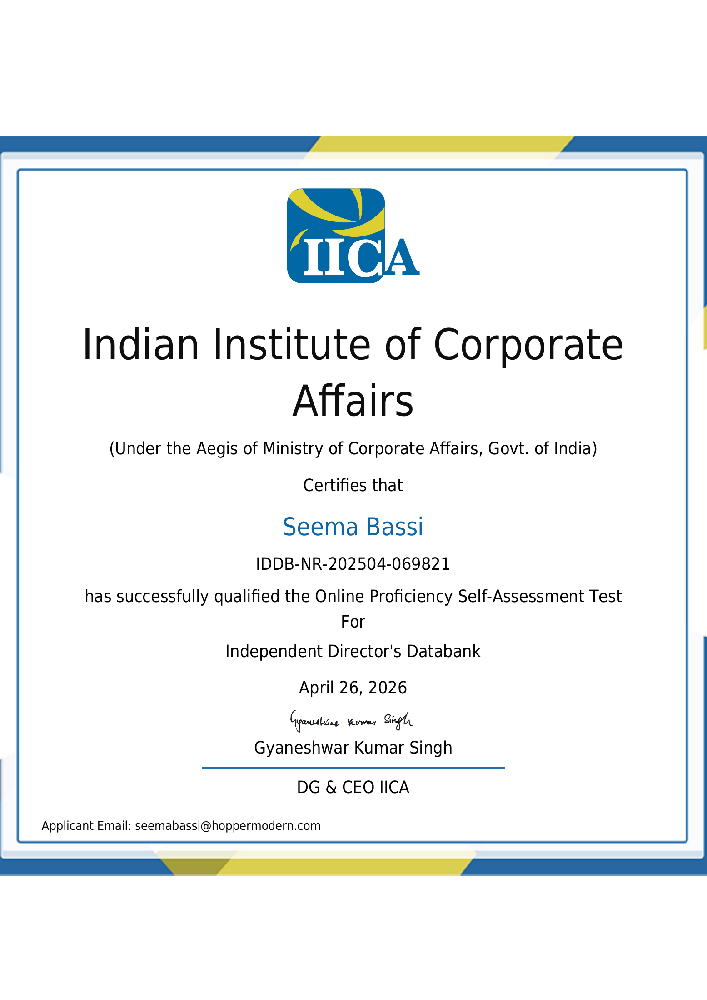

As featured on
Startup Caffe Podcast.
Seema sat down with Startup Caffe to unpack how founders can turn L&D from a cost centre into a growth lever — and why the next wave of Learning will be AI-native.


I'm Seema Bassi — former VP / GM / Head of Department at Aviva Life Insurance and GE Capital India. For over two and a half decades, I've built Learning functions from scratch, put systems in place, and aligned them to organizational goals — moving the needle on performance and productivity.
After a career inside global giants, I've taken everything I've learned and turned it into a proven framework for SMEs and startup founders. I've successfully transformed Learning functions into profit centres at start-ups using a system grounded in ADDIE, modern learning principles, and AI Learning.
Today, I work as a Fractional CLO / Founder — either building your L&D function from the ground up, or rescuing one that's lost its way.
Certified by the Indian Institute of Corporate Affairs (IICA) under the aegis of the Ministry of Corporate Affairs, Government of India — listed on the Independent Director's Databank.
Beyond Learning & Development, Seema is qualified to serve on boards as an Independent Director — bringing 25+ years of operating experience, governance fluency, and strategic counsel to founders and SMEs.
For Hopper Modern clients, this means a Fractional CLO who thinks like a board member: aligned to fiduciary outcomes, growth strategy, and long-term shareholder value — not just learning programs.
Certificate ID: IDDB-NR-202504-069821

Seema sat down with Startup Caffe to unpack how founders can turn L&D from a cost centre into a growth lever — and why the next wave of Learning will be AI-native.
Every learning intervention starts with a business metric. If we can't tie it to performance, we don't build it.
Modern learning isn't a classroom. It's personalised, on-demand, data-rich — and AI is the force multiplier that makes it possible at any scale.
Great L&D is a strategic lever, not a cost centre. I don't build programs — I build capability engines tied to your goals.
Whether you need a Fractional CLO for six months or a full L&D turnaround, let's start with a conversation.
Book a Discovery Call